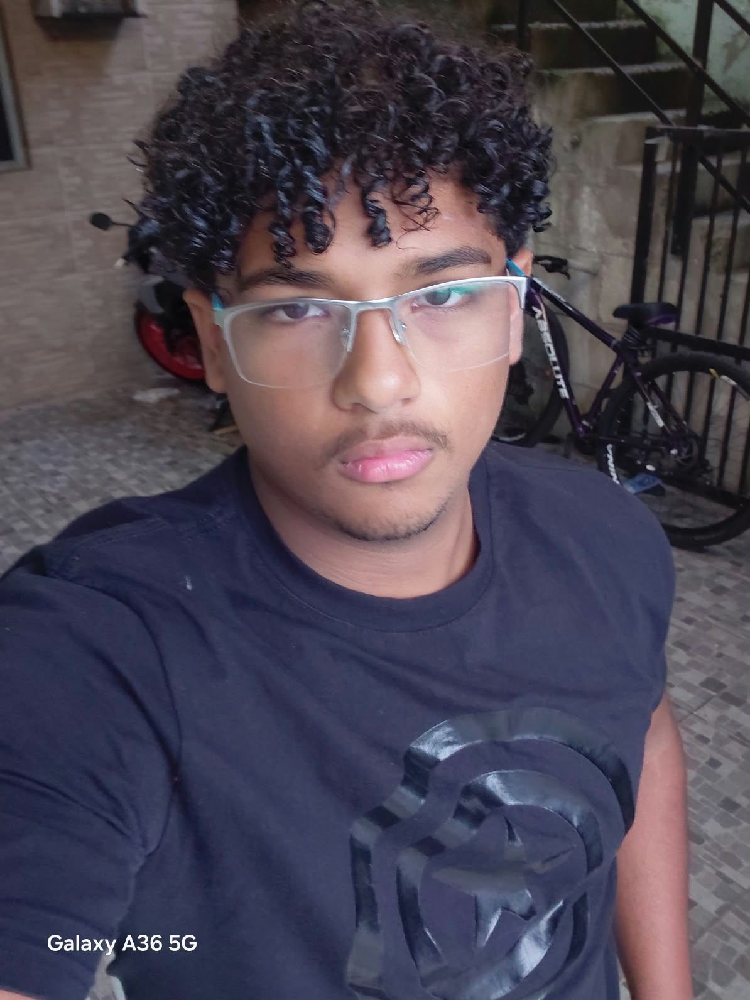
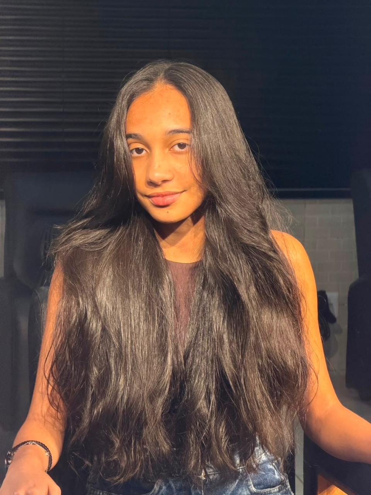
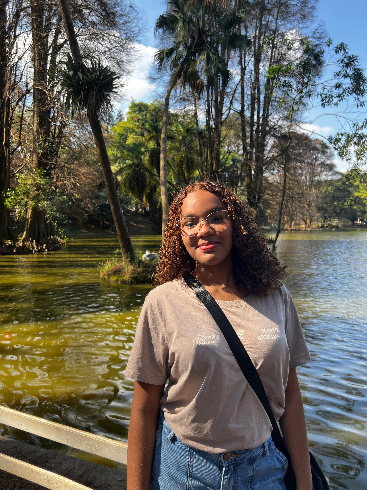

Sobre
Nosso site
Nosso site foi criado com muito carinho para compartilhar o maravilhoso mundo da literatura por meio de contos, resenhas e cordéis. Queremos despertar a imaginação, incentivar o hábito da leitura e mostrar que ler pode ser uma experiência divertida, emocionante e cheia de descobertas. Nosso objetivo é espalhar conhecimento, cultura e alegria, tornando a leitura cada vez mais presente em nossas vidas!
Introdução
A Língua Portuguesa é uma matéria fundamental para nossa formação, pois nos ensina muito mais do que ler e escrever. Nós aprendemos a nos comunicar melhor, interpretar textos, expressar nossos pensamentos, conhecer diferentes formas de literatura e entender a importância da nossa língua e da nossa cultura. Durante este ano, tivemos a oportunidade de aprender, descobrir e desenvolver diversos conhecimentos com a orientação da nossa querida professora e coordenadora de curso, professora Fabiana, uma excelente professora de Português, que nos acompanhou nessa jornada com dedicação, paciência e carinho.
Conto
O conto é um gênero literário caracterizado por ser uma narrativa curta, com poucos personagens e acontecimentos, apresentando um enredo objetivo e um desfecho marcante. Os contos podem abordar temas variados, como aventura, mistério, romance, fantasia e questões do cotidiano, despertando a imaginação e a reflexão do leitor. Sua importância está no incentivo à leitura e no desenvolvimento da criatividade, da interpretação e da imaginação.
Cordel
A literatura de cordel é um gênero popular formado por poemas, geralmente escritos em versos rimados, que contam histórias, apresentam ensinamentos e retratam fatos do cotidiano ou temas sociais e culturais. Sua importância está na valorização da cultura popular, na preservação das tradições e no incentivo à leitura.
Reportagem
A reportagem é um gênero jornalístico que tem como objetivo informar o público sobre fatos, acontecimentos ou temas de interesse social de forma clara, detalhada e baseada em informações verificadas. Sua importância está em manter a sociedade bem informada, estimular o pensamento crítico e contribuir para a formação da opinião pública.
Resenha
A resenha é um gênero textual que apresenta a análise e a avaliação de uma obra, como um livro, filme, série ou peça teatral. Além de resumir os principais aspectos da obra, pode destacar seus pontos positivos e negativos. Sua importância está em ajudar as pessoas a conhecerem melhor uma obra e incentivar a leitura crítica e a argumentação.
Nossa equipe

Rhuan Fonseca
Programador

Luis Felipe
Programador

Giovanna Fernandes
Programadora

Geovanna Vital
Programadora

Marina Matos
Programadora

Maria Eduarda Lira
Mídias, design e roteirista